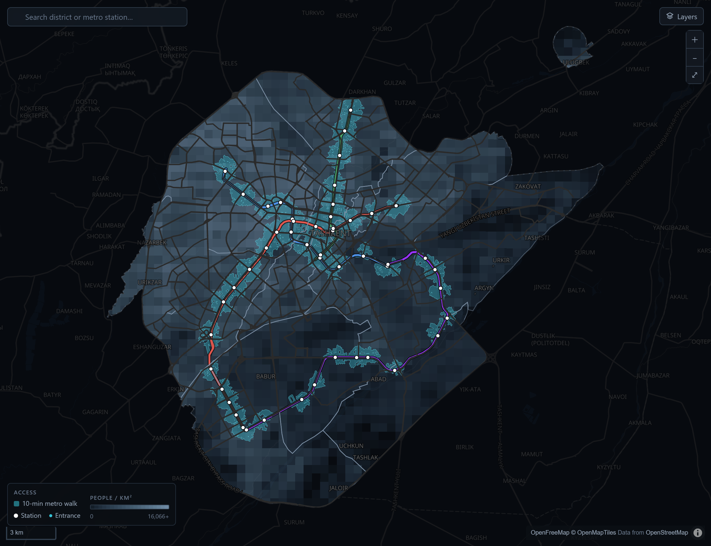
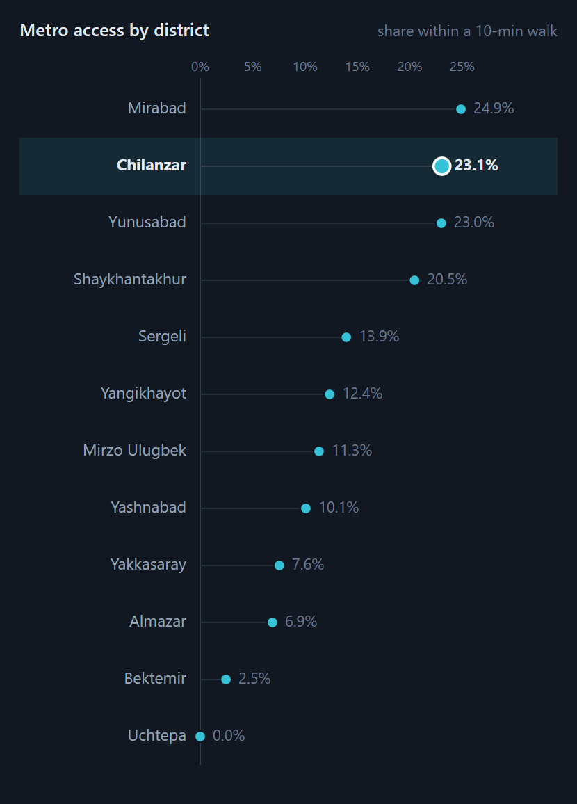
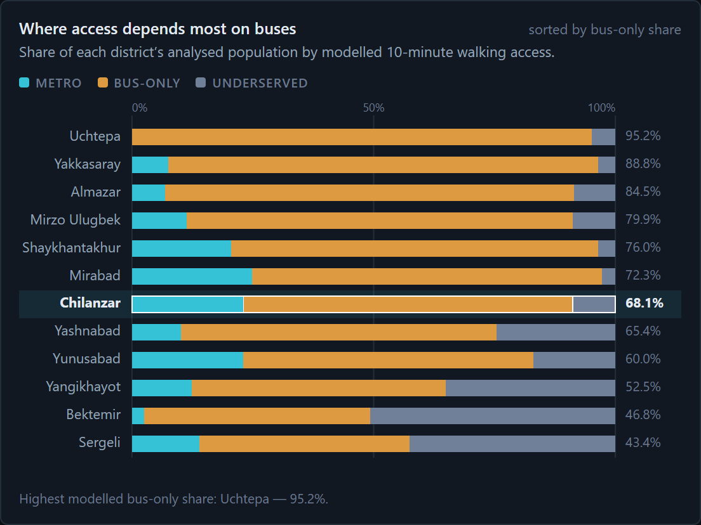
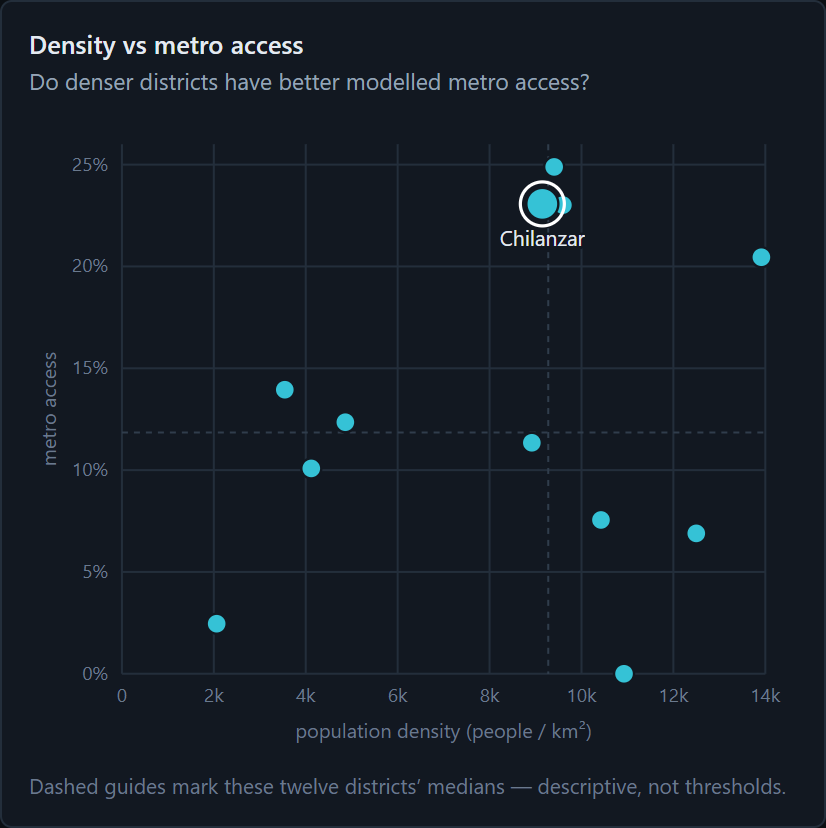
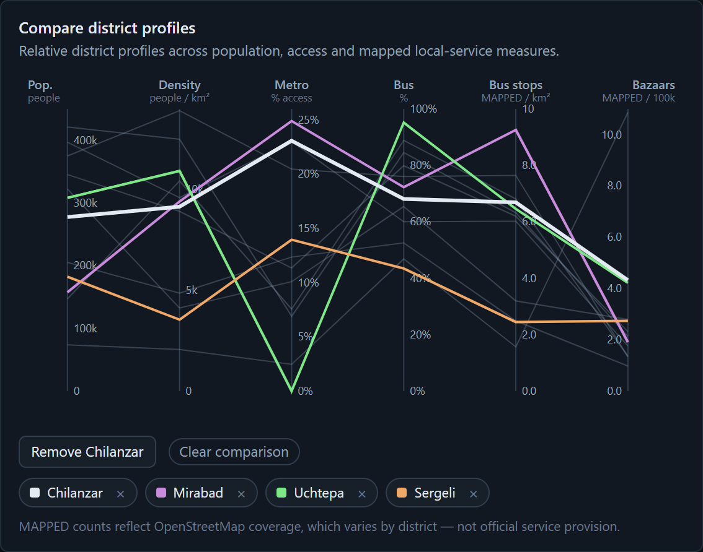
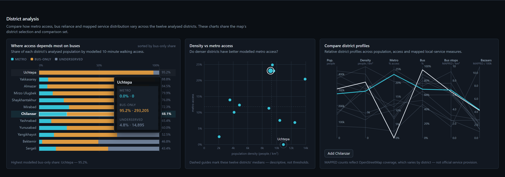

of the analysed population lives within a modelled 10-minute walk of metro access: about 435,690 of 3,212,200 residents.
12 districts · official SIAT 2026-Q2 population · 800 m along the pedestrian network (10 min at 4.8 km/h). A model estimate, not observed travel.
Introduction
Tashkent's metro grew from 29 stations in 2015 to 50, but a line on a map is not access on foot. We built a reproducible walking-network model and a linked interactive website so residents, commuters and planners can see who can walk to the metro, and who relies on buses.
Research questions
1What share of residents live within a 10-minute walk of metro access?
2Which districts have the highest and lowest coverage?
3Which districts depend mostly on buses?
4Are dense districts relatively underserved?
5How does bazaar access overlap with metro and bus?
WorldPop only weights cells within districts, rescaled to official totals
Step 3
Route on the walk network
Network, not circles. 800 m is walked along streets: a barrier with one crossing (blue) cuts the reachable network (teal) well inside the straight-line circle (dashed). Multi-source Dijkstra from 154 metro access points and every bus stop.
Step 4
Classify & visualize
65,169 cells → metro · bus-only · underserved, summed by district
Sensitivity to walking speed and population surface
Static site: D3 charts + MapLibre map sharing one selection store
Results · five linked views
Screenshots of the live website; Chilanzar selected

AInteractive access map Q1
Teal 10-minute metro catchment over population density, with bus-stop and bazaar layers, search and district selection. Access is a narrow ribbon along the lines; counting bus stops, 85.6% reach some transit.

BRanked dot plot Q2
Mirabad 24.9% → Uchtepa 0.0%. The top four hold 62% of all metro-accessible residents.

C100% stacked composition Q3
Two different gaps. Mostly bus-only: Uchtepa 95.2%, Yakkasaray 88.8%, Almazar 84.5% bus-only. Beyond both modes: Bektemir 50.7%, Sergeli 42.6% underserved.

DDensity vs access Q4
No relationship (Spearman ρ ≈ 0.01, n = 12). Almazar, Uchtepa, Yakkasaray are dense, below-median for metro, and mostly bus-only.

EParallel coordinates Compare
Six attributes, up to four pinned districts. Profiles cross: Uchtepa is 0% metro but tops bus-only; Sergeli has the lowest bus-only share. No district is uniformly strong or weak.
Major interactions: one store links all five views
Hovering over Uchtepa in C highlights it in D and E and opens a tooltip.

Hoverhighlights a district in every view
Clickselects it globally; the map zooms and the profile opens
Comparepins up to four districts in colour
Search & layersfind a district or station; toggle buses and bazaars
Q5 · Bazaar × transit overlap
Four in five residents near a bazaar are bus-only
Residents within a modelled 10-minute walk of a mapped OSM marketplace, by transit class. Measures walking proximity, not shopping trips or transfers.
Everyday destinations · same current model
Schools are near most residents; bazaars are not
"Healthcare + education" is the true intersection of the two, not the sum of two shares.
Standardized 2015–2026 series · separate method
The 2020 station openings moved access the most
Station-centre proxies, fixed network, annual WorldPop weights: not comparable with the 13.6% headline.
Discussion
View
What (data)
Why (task)
How (marks · channels)
A Map
Catchment, density grid, stations, stops
Locate, explore
Areas, points, lines · luminance, teal hue
B Dot plot
12 districts × metro %
Rank, find extremes
Points · aligned position, sorted
C 100% bars
12 × three-class split
Part-to-whole
Segments · length, categorical hue
D Scatter
Density × metro %
Correlate, outliers
Points · x/y position, median guides
E Parallel
6 attributes per district
Compare profiles
Lines · position per axis, ≤ 4 highlights
Strengths
Quantities use position on common scales
One colour code across all views
Linked overview → details on demand
Uncertainty shown; keyboard and screen-reader access
Limitations
Modelled proximity, not travel, frequency or fares
District averages hide local variation (n = 12)
OSM gaps; straight-line connectors; 10 stations lack entrances
Parallel coordinates are unfamiliar to lay readers
How sensitive is 13.6% to walking speed?
Conclusion
1About one in seven residents (13.6%) can reach metro access in a modelled 10-minute walk.
2Access concentrates in four central districts (20–25%); Uchtepa sits at 0.0%, only 19.7 m outside the threshold.
3For 72% of residents the walkable transit is a bus stop, most of all in Uchtepa, Yakkasaray and Almazar.
4Density does not predict access: dense Uchtepa, Almazar and Yakkasaray rely mostly on buses; the low-density periphery lacks both.
5Among residents who can walk to a bazaar, 79.9% are bus-only.
What readers can take away: residents can check whether the metro is realistically walkable from their district. Planners can tell apart two kinds of gap, dense districts that rely on buses and a periphery beyond both modes, as places to examine rather than verdicts on service quality.
Future work
Address search · walking-speed slider · mahalla-level aggregation · official bus-frequency data · lines under construction · testing with residents.